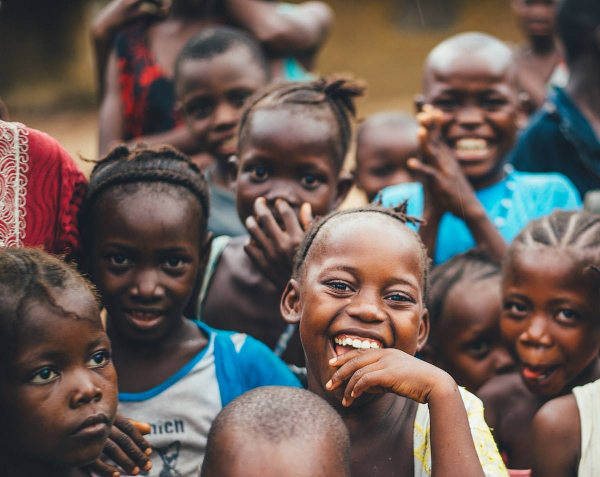
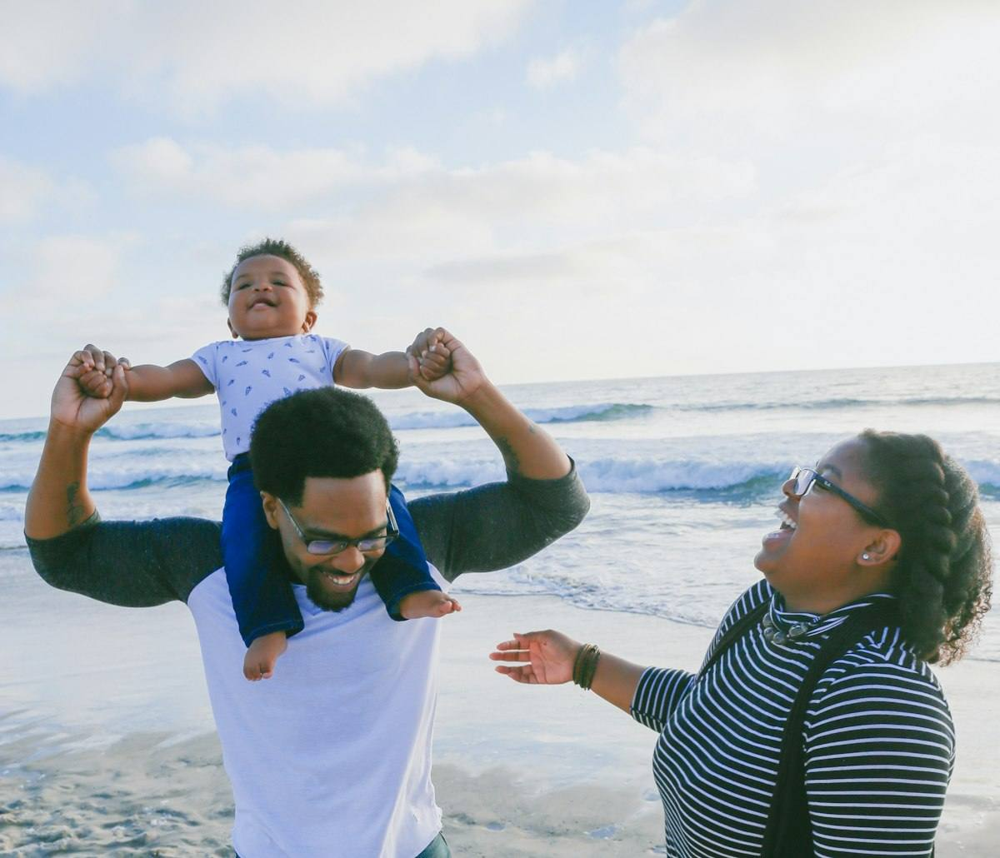
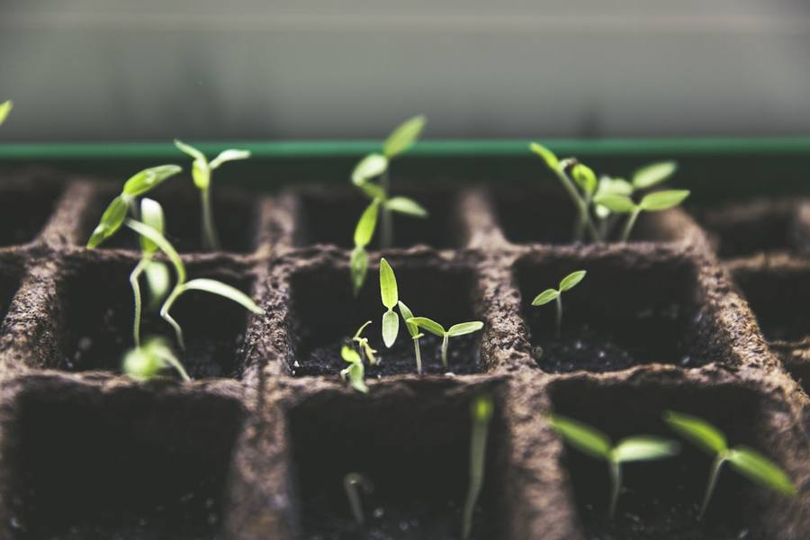
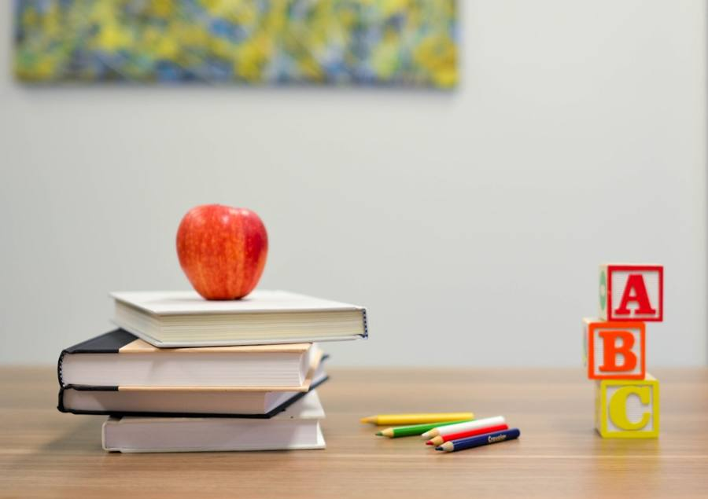

Santé
Lutte contre la mortalité infantile, accompagnement des femmes enceintes et maternités de proximité.
En savoir plus →
Fondation humanitaire · Suisse 🇨🇭 – Côte d'Ivoire 🇨🇮
Depuis 2017, nous œuvrons avec amour pour l'éducation, la santé, l'autonomisation des femmes et la protection de l'enfance.

Qui sommes-nous ?
Fruit de l'engagement du couple Decurey, la Fondation Giv'in Love unit la Suisse et la Côte d'Ivoire autour d'une même conviction : chaque famille mérite de vivre dignement.
Nos missions
De l'aide humanitaire d'urgence au développement durable, nos programmes accompagnent les familles à chaque étape de la vie.
Lutte contre la mortalité infantile, accompagnement des femmes enceintes et maternités de proximité.
En savoir plus →Foyers de jeunes filles, centres pédagogiques, formations professionnelles et scolarisation pour tous.
En savoir plus →Coopératives agricoles, microfinance et entrepreneuriat féminin pour une indépendance durable.
En savoir plus →Témoignages
Grâce à la coopérative soutenue par la Fondation, je nourris mes enfants et je les envoie à l'école. J'ai retrouvé ma dignité.
Le suivi de ma grossesse par l'équipe santé a tout changé. Mon fils est né en bonne santé, entouré et protégé.
Être bénévole avec Giv'in Love, c'est voir l'espoir renaître dans les yeux des familles. Une aventure humaine inoubliable.
Galerie
Actualités

EnvironnementUne grande journée de reboisement avec les écoles de la région, pour des villages plus verts.
Lire la suite →
ÉducationCartables, cahiers et manuels distribués pour que chaque enfant commence l'année avec les mêmes chances.
Lire la suite →Vingt femmes entrepreneures reçoivent un premier microcrédit pour développer leur activité.
Lire la suite →